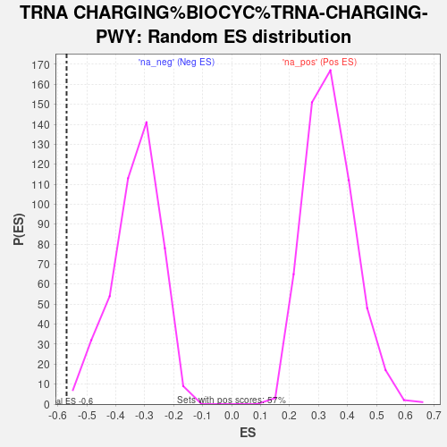

| | | Dataset | GFPPositive_GFPNegative |
| Phenotype | NoPhenotypeAvailable |
| Upregulated in class | na_neg |
| GeneSet | TRNA CHARGING%BIOCYC%TRNA-CHARGING-PWY |
| Enrichment Score (ES) | -0.5698933 |
| Normalized Enrichment Score (NES) | -1.7256845 |
| Nominal p-value | 0.0023041475 |
| FDR q-value | 0.3969146 |
| FWER p-Value | 1.0 |
Table: GSEA Results Summary
 Fig 1: Enrichment plot: TRNA CHARGING%BIOCYC%TRNA-CHARGING-PWY
Fig 1: Enrichment plot: TRNA CHARGING%BIOCYC%TRNA-CHARGING-PWY
Profile of the Running ES Score & Positions of GeneSet Members on the Rank Ordered List
| SYMBOL | RANK IN GENE LIST | RANK METRIC SCORE | RUNNING ES | CORE ENRICHMENT | | 1 | QARS1 | 2333 | 0.655 | -0.0893 | No |
| 2 | AARS2 | 2943 | 0.514 | -0.0944 | No |
| 3 | HARS1 | 3761 | 0.375 | -0.1180 | No |
| 4 | CARS2 | 5411 | 0.199 | -0.1950 | No |
| 5 | MARS2 | 5672 | 0.178 | -0.1994 | No |
| 6 | RARS1 | 6281 | 0.133 | -0.2246 | No |
| 7 | PARS2 | 6717 | 0.103 | -0.2423 | No |
| 8 | LARS2 | 7350 | 0.065 | -0.2724 | No |
| 9 | FARSA | 7501 | 0.056 | -0.2774 | No |
| 10 | TARS2 | 7718 | 0.042 | -0.2867 | No |
| 11 | DARS2 | 8434 | 0.005 | -0.3244 | No |
| 12 | FARSB | 8992 | -0.023 | -0.3528 | No |
| 13 | IARS2 | 10139 | -0.086 | -0.4091 | No |
| 14 | VARS2 | 11564 | -0.171 | -0.4757 | No |
| 15 | TARS3 | 11656 | -0.177 | -0.4712 | No |
| 16 | RARS2 | 12856 | -0.267 | -0.5207 | No |
| 17 | HARS2 | 12937 | -0.273 | -0.5105 | No |
| 18 | KARS1 | 13487 | -0.316 | -0.5229 | No |
| 19 | EPRS1 | 14345 | -0.402 | -0.5471 | Yes |
| 20 | FARS2 | 14602 | -0.433 | -0.5378 | Yes |
| 21 | VARS1 | 15207 | -0.503 | -0.5433 | Yes |
| 22 | SARS1 | 15211 | -0.503 | -0.5168 | Yes |
| 23 | DARS1 | 15426 | -0.535 | -0.4998 | Yes |
| 24 | WARS2 | 15612 | -0.564 | -0.4798 | Yes |
| 25 | GARS1 | 15767 | -0.587 | -0.4569 | Yes |
| 26 | IARS1 | 16020 | -0.629 | -0.4371 | Yes |
| 27 | TARS1 | 16060 | -0.635 | -0.4055 | Yes |
| 28 | LARS1 | 16341 | -0.687 | -0.3840 | Yes |
| 29 | EARS2 | 16551 | -0.728 | -0.3565 | Yes |
| 30 | AARS1 | 16556 | -0.730 | -0.3181 | Yes |
| 31 | SARS2 | 16701 | -0.760 | -0.2855 | Yes |
| 32 | YARS2 | 17070 | -0.840 | -0.2606 | Yes |
| 33 | NARS2 | 17184 | -0.872 | -0.2205 | Yes |
| 34 | WARS1 | 17291 | -0.907 | -0.1781 | Yes |
| 35 | YARS1 | 17493 | -0.983 | -0.1367 | Yes |
| 36 | NARS1 | 17654 | -1.043 | -0.0900 | Yes |
| 37 | MARS1 | 18173 | -1.358 | -0.0456 | Yes |
| 38 | CARS1 | 18356 | -1.552 | 0.0269 | Yes |
Table: GSEA details [plain text format]

Fig 2: TRNA CHARGING%BIOCYC%TRNA-CHARGING-PWY: Random ES distribution
Gene set null distribution of ES for TRNA CHARGING%BIOCYC%TRNA-CHARGING-PWY